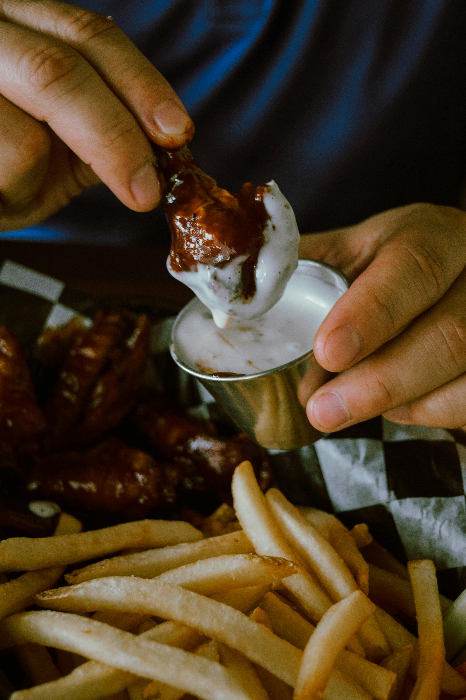

Peri Peri Buffalo Chicken Dip
Back to Recipes

Description: A spicy twist on the classic buffalo chicken dip with peri peri heat!
Ingredients
- 2 cups cooked, shredded chicken
- 1/2 cup peri peri sauce
- 1/2 cup buffalo wing sauce
- 8 oz cream cheese, softened
- 1/2 cup ranch or blue cheese dressing
- 1 cup shredded cheddar cheese
- 1/4 cup chopped green onions
- Crackers, chips, or bread for serving
Steps
- Preheat oven to 375°F (190°C).
- In a mixing bowl, combine cream cheese, peri peri sauce, buffalo sauce, and dressing.
- Stir in shredded chicken and half of the cheddar cheese.
- Spread the mixture into a baking dish and top with remaining cheese.
- Bake for 20–25 minutes, until bubbly and golden.
- Top with green onions and serve warm with chips or bread.